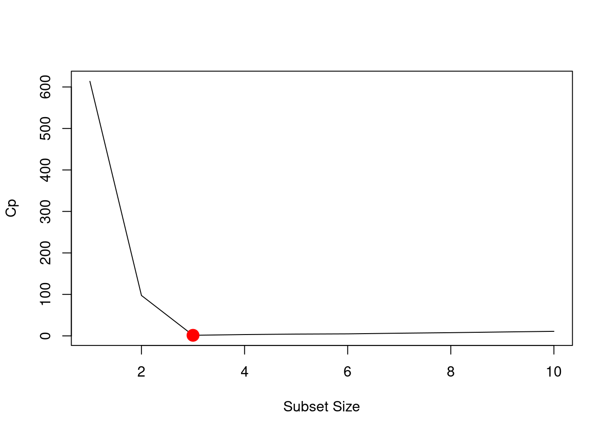
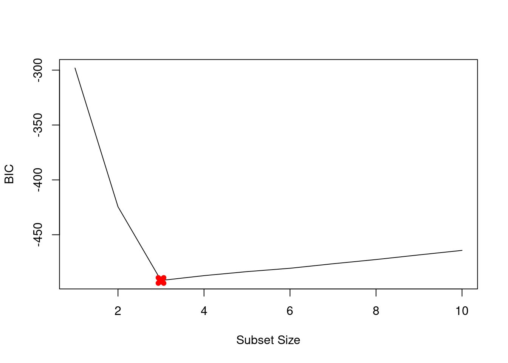
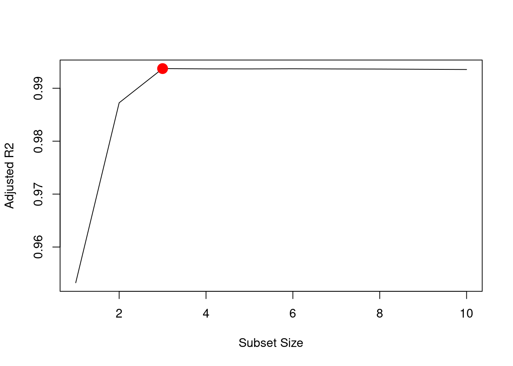
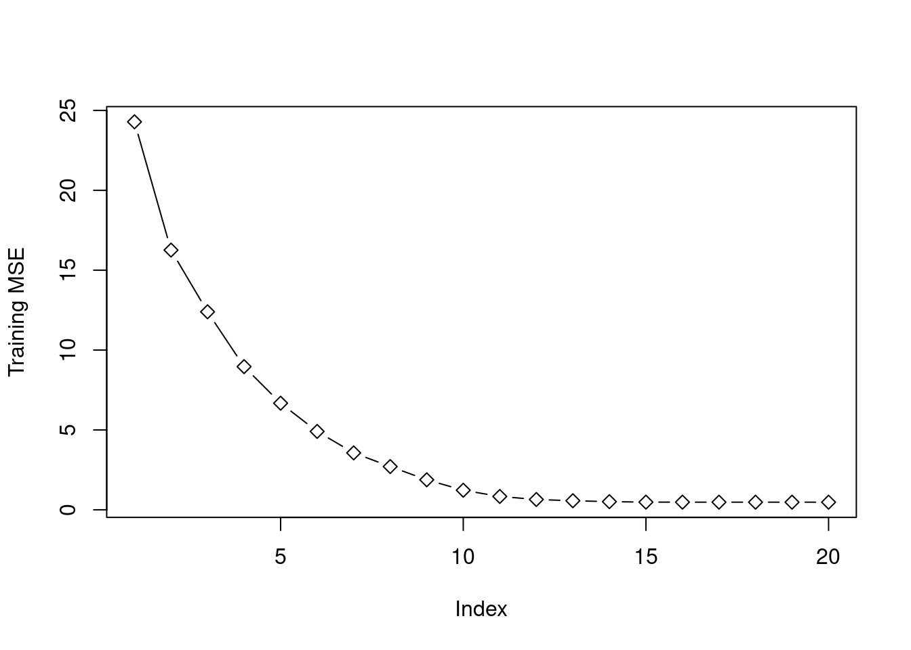

## set seed for rnorm function
set.seed(10)
## rnorm simulates pseudo random variates from a
## (standard) normal distribution
X <- rnorm(100)
eps <- rnorm(100)Solutions
Exercise 2
For parts (a) through (c), indicate which of i. through iv. is correct. Justify your answer.
2 a) The Lasso, relative to least squares, is:
More flexible and hence will give improved prediction accuracy when its increase in bias is less than its decrease in variance.
More flexible and hence will give improved prediction accuracy when its increase in variance is less than its decrease in bias.
Less flexible and hence will give improved prediction accuracy when its increase in bias is less than its decrease in variance.
Less flexible and hence will give improved prediction accuracy when its increase in variance is less than its decrease in bias.
Answer: Claim iii is correct. Relative to least squares, the Lasso is less flexible and hence it will give us better predictions when its increase in (squared) bias is less than its decrease in variance.
2 b) Repeat a) for ridge regression relative to least squares.
Answer: Claim iii is correct with the same justification as in a).
2 c) Repeat a) for non-linear methods relative to least squares.
Answer: Claim ii is correct. Relative to least squares, non-linear methods are typically more flexible and hence, these methods will give us better predictions when the increase in variance is less than the decrease in bias.
Exercise 4
Suppose we estimate the regression coefficients in a linear regression model by minimizing:
\[\sum^n_{i=1} \left(y_i - \beta_0 - \sum^p_{j=1} \beta_j x_{ij}\right)^2 + \lambda \sum^p_{j=1} \beta_j^2\]
for a particular value of \(\lambda\). For parts (a) through (e), indicate which of i. through v. is correct. Justify your answer.
4 a) As we increase \(\lambda\) from 0, the training RSS will:
Increase initially, and then eventually start decreasing in an inverted U shape.
Decrease initially, and then eventually start increasing in a U shape.
Steadily increase.
Steadily decrease.
Remain constant.
Answer: Claim iii. (Steadily increase) is correct. As we increase \(\lambda\) from \(0\), all \(\beta\)’s are shrunk from their unrestricted least square estimates to \(0\). Training error is minimized for the most flexible model (i.e. \(\lambda=0\)), and steadily increases as \(\beta\)’s are shrunk twards \(0\), since this hinders the model to “follow” the training data.
4 b) Repeat 4 a) for test RSS.
Answer: Claim ii. (Decrease initially, and then eventually start increasing in a U shape) is correct. When \(\lambda=0\), all \(\beta\)’s have their least square estimate values. In this case, the model is most flexible which typically results in a small bias, but (too) large variance and hence a high test RSS value. As we increase \(\lambda\), the \(\beta\) estimates are shrunk to zero which reduces variance. Thus, test RSS initially decreases; however, as \(\beta\)’s approach infinity, the model becomes too simple (small variance, but (too) large bias) and test RSS increases.
4 c) Repeat a) for variance.
Answer: Claim iv. (Steadily decrease) is correct.
When \(\lambda =0\), the \(\beta\)’s have their least square estimate values. The actual estimates heavily depend on the training data and hence variance is high. As we increase \(\lambda\), the estimates of \(\beta\) are shrunk towards zero. In the limiting case of \(\lambda\) approaching infinity, all \(\beta\) ’s reduce to zero and model predicts a constant and has minimal variance.
4 d) Repeat a) for (squared) bias.
Answer: iii. Steadily increase.
When \(\lambda =0\), the \(\beta\) ’s have their least-square estimate values and hence have the least bias. As \(\lambda\) increases, \(\beta\) ’s start reducing towards zero, the model fits less accurately to training data and hence bias increases. In the limiting case of \(\lambda\) approaching infinity, the model predicts a constant and hence bias is maximum.
4 e) Repeat a) for the irreducible error.
Answer: Claim v. (Remain constant) is correct.
By definition, irreducible error is model independent and hence irrespective of the choice of \(\lambda\), it remains constant.
Exercise 8
In this exercise, we will generate simulated data, and will then use this data to perform best subset selection.
8 a) Use the rnorm() function to generate a predictor \(X\) of length \(n = 100\), as well as a noise vector \(\epsilon\) of length \(n = 100\).
Answer:
8 b) Generate a response vector \(Y\) of length \(n = 100\) according to the model:
\[Y = \beta_0 + \beta_1 X + \beta_2 X^2 + \beta_3 X^3 + \epsilon,\]
where \(\beta_0, \beta_1, \beta_2, \beta_3\) are constants of your choice.
Answer:
## beta parameters
beta0 <- 2
beta1 <- 2
beta2 <- -2
beta3 <- 4
## Generate response vector Y
Y <- beta0 + beta1 * X + beta2 * X^2 + beta3 * X^3 + eps8 c) Use the regsubsets() function to perform best subset selection in order to choose the best model containing the predictors \(X, X^2, ..., X^{10}\). What is the best model obtained according to Cp, BIC, and adjusted \(R^2\)? Show some plots to provide evidence for your answer, and report the coefficients of the best model obtained. Note you will need to use the data.frame() function to create a single data set containing both \(X\) and \(Y\).
## Install package leaps if needed
# install.packages("leaps")
options(warn=-1)
## Call the leaps package
library(leaps)
## Use data.frame() function to create single dataset of X and Y
data.full <- data.frame(y = Y, x = X)
## Use the regsubsets() function to perform best subset selection
mod.full <- regsubsets(y ~ poly(x, 10, raw = TRUE),
data = data.full,
nvmax = 10)
## Store results "printed" when using summary function
mod.summary <- summary(mod.full)
## Find the model size which minimizes Cp:
which.min(mod.summary$cp)[1] 3## Plot the Cp-values
plot(mod.summary$cp,
xlab = "Subset Size",
ylab = "Cp",
type = "l")
points(which.min(mod.summary$cp),
mod.summary$cp[3],
pch = 19,
col = "red",
lwd = 7)
# BIC
which.min(mod.summary$bic)[1] 3plot(mod.summary$bic,
xlab = "Subset Size",
ylab = "BIC",
type = "l")
points(which.min(mod.summary$bic),
mod.summary$bic[3],
pch = 19,
col = "red",
lwd = 7)
# adjr2
which.max(mod.summary$adjr2)[1] 3plot(mod.summary$adjr2,
xlab = "Subset Size",
ylab = "Adjusted R2",
type = "l")
points(which.max(mod.summary$adjr2),
mod.summary$adjr2[3],
pch = 19,
col = "red",
lwd = 7)
Answer: We find that all criteria (Cp, BIC and Adjusted R2) choose the 3 variables model.
round(coefficients(mod.full, id = 3), digits=2) (Intercept) poly(x, 10, raw = TRUE)1 poly(x, 10, raw = TRUE)2
1.93 1.88 -2.04
poly(x, 10, raw = TRUE)3
4.02 Answer: As expected, all the coefficients are quite close to our chosen parameter values: \(\beta_0=\beta_1=2\), \(\beta_2=-2\), and \(\beta_3=4.\)
8 d) Repeat (c), using forward stepwise selection and also using backwards stepwise selection. How does your answer compare to the results in (c)?
## Use the regsubsets() function to perform best subset selection
## Forward Selection
mod.fwd <- regsubsets(y ~ poly(x, 10, raw = TRUE),
data = data.full,
nvmax = 10,
method = "forward")
## Backward Selection
mod.bwd <- regsubsets(y ~ poly(x, 10, raw = TRUE),
data = data.full,
nvmax = 10,
method = "backward")
## Store results
fwd.summary <- summary(mod.fwd)
bwd.summary <- summary(mod.bwd)
## Find the model size for best:
## Cp
which.min(fwd.summary$cp) # forward[1] 3which.min(bwd.summary$cp) # backward[1] 5# BIC
which.min(fwd.summary$bic) # forward[1] 3which.min(bwd.summary$bic) # backward[1] 5# adjr2
which.max(fwd.summary$adjr2) # forward[1] 3which.max(bwd.summary$adjr2) # backward[1] 5# Plot the statistics
par(mfrow = c(3, 2))
#cp
plot(fwd.summary$cp, xlab = "Subset Size", ylab = "Forward Cp", type = "l")
points(which.min(fwd.summary$cp), min(fwd.summary$cp), pch = 19, col = "red", lwd = 7)
plot(bwd.summary$cp, xlab = "Subset Size", ylab = "Backward Cp", type = "l")
points(which.min(bwd.summary$cp), min(bwd.summary$cp), pch = 19, col = "red", lwd = 7)
## BIC
plot(fwd.summary$bic, xlab = "Subset Size", ylab = "Forward BIC", type = "l")
points(which.min(fwd.summary$bic), min(fwd.summary$bic), pch = 19, col = "red", lwd = 7)
plot(bwd.summary$bic, xlab = "Subset Size", ylab = "Backward BIC", type = "l")
points(which.min(bwd.summary$bic), min(bwd.summary$bic), pch = 19, col = "red", lwd = 7)
#adjr2
plot(fwd.summary$adjr2, xlab = "Subset Size", ylab = "Forward Adjusted R2", type = "l")
points(which.max(fwd.summary$adjr2), max(fwd.summary$adjr2), pch = 19, col = "red", lwd = 7)
plot(bwd.summary$adjr2, xlab = "Subset Size", ylab = "Backward Adjusted R2", type = "l")
points(which.max(bwd.summary$adjr2), max(bwd.summary$adjr2), pch = 19, col = "red", lwd = 7)
Answer: While all backward stepwise selection approaches with Cp, BIC and adjusted \(R^2\) pick the 5 variables model, the forward stepwise selection approaches with Cp, BIC and adjusted \(R^2\) pick the 3 variables model. Here are the coefficients:
round(coefficients(mod.fwd, id = 3), digits=2) (Intercept) poly(x, 10, raw = TRUE)1 poly(x, 10, raw = TRUE)2
1.93 1.88 -2.04
poly(x, 10, raw = TRUE)3
4.02 round(coefficients(mod.bwd, id = 5), digits=2) (Intercept) poly(x, 10, raw = TRUE)1 poly(x, 10, raw = TRUE)2
1.98 3.14 -2.08
poly(x, 10, raw = TRUE)5 poly(x, 10, raw = TRUE)7 poly(x, 10, raw = TRUE)9
3.42 -1.05 0.11 Answer: All the coefficient estimates from forward stepwise selection are quite close to our chosen \(\beta\) ’s. However, for the backward stepwise with 5 variable picks \(X^5, X^7, X^9\) and drops \(X^3\).
8 e) Now fit a lasso model to the simulated data, again using \(X, X^2, ..., X^{10}\) as predictors. Use cross-validation to select the optimal value of \(\lambda\). Create plots of the cross-validation error as a function of \(\lambda\). Report the resulting coefficient estimates, and discuss the results obtained.
## install.packages("glmnet")
## Load the glmnet package
library(glmnet)Loading required package: MatrixLoaded glmnet 4.1-4## set seed
set.seed(10)
## Training Lasso on the data
xmat <- model.matrix(y ~ poly(x, 10, raw = TRUE),
data = data.full)[, -1]
## Use cross-validation to select the optimal value of lambda
mod.lasso <- cv.glmnet(xmat, Y, alpha = 1)
## Store and display lambda
best.lambda <- mod.lasso$lambda.min
best.lambda[1] 0.05988275## Plot
plot(mod.lasso)
## Next fit the model on entire data using the best lambda
best.model <- glmnet(xmat, Y, alpha = 1)
##
predict(best.model,
s = best.lambda,
type = "coefficients") # print the coefficient estimates11 x 1 sparse Matrix of class "dgCMatrix"
s1
(Intercept) 1.881373
poly(x, 10, raw = TRUE)1 1.854449
poly(x, 10, raw = TRUE)2 -1.991838
poly(x, 10, raw = TRUE)3 4.010379
poly(x, 10, raw = TRUE)4 .
poly(x, 10, raw = TRUE)5 .
poly(x, 10, raw = TRUE)6 .
poly(x, 10, raw = TRUE)7 .
poly(x, 10, raw = TRUE)8 .
poly(x, 10, raw = TRUE)9 .
poly(x, 10, raw = TRUE)10 . Answer: Lasso picks the correct specification.
8 f) Now generate a response vector Y according to the model:
\[Y = \beta_0 + \beta_7 X^7 + \epsilon\]
and perform best subset selection and the lasso. Discuss the results obtained.
## Create new beta7 value
beta7 <- 2
## Model
Y <- beta0 + beta7 * X^7 + eps
## Predict using regsubsets
data.full <- data.frame(y = Y, x = X)
mod.full <- regsubsets(y ~ poly(x, 10, raw = TRUE),
data = data.full,
nvmax = 10)
mod.summary <- summary(mod.full)
## Find the model size for best Cp, BIC and adjr2
which.min(mod.summary$cp)[1] 1which.min(mod.summary$bic)[1] 1which.max(mod.summary$adjr2)[1] 1round(coefficients(mod.full, id = 1), digits=2) (Intercept) poly(x, 10, raw = TRUE)7
1.9 2.0 Answer: Best subset selection selects the correct 1 variable model (no matter which criterion Cp, BIC, and adjusted \(R^2\)) is used.
xmat <- model.matrix(y ~ poly(x, 10, raw = TRUE),
data = data.full)[, -1]
mod.lasso <- cv.glmnet(xmat, Y, alpha = 1)
best.lambda <- mod.lasso$lambda.min
best.lambda[1] 2.717423best.model <- glmnet(xmat, Y, alpha = 1)
predict(best.model,
s = best.lambda,
type = "coefficients")11 x 1 sparse Matrix of class "dgCMatrix"
s1
(Intercept) 1.783453
poly(x, 10, raw = TRUE)1 .
poly(x, 10, raw = TRUE)2 .
poly(x, 10, raw = TRUE)3 .
poly(x, 10, raw = TRUE)4 .
poly(x, 10, raw = TRUE)5 .
poly(x, 10, raw = TRUE)6 .
poly(x, 10, raw = TRUE)7 1.941570
poly(x, 10, raw = TRUE)8 .
poly(x, 10, raw = TRUE)9 .
poly(x, 10, raw = TRUE)10 . Answer: Lasso also picks the correct 1-variable model.
Exercise 10
We have seen that as the number of features used in a model increases, the training error will necessarily decrease, but the test error may not. We will now explore this in a simulated data set.
10 a) Generate a data set with \(p = 20\) features, \(n = 1000\) observations, and an associated quantitative response vector generated according to the model:
\[Y = X\beta + \epsilon,\]
where \(\beta\) has some elements that are exactly equal to zero.
## set seed for rnorm function
set.seed(10)
## select number of features
p <- 20
## select number of observations
n <- 1000
## rnorm simulates realizations of
## random variates having a specified
## normal distribution (here standard normal)
## x is a 1000x20 matrix
x <- matrix(rnorm(n * p), n, p)
## B and eps are a 20x1 vector
B <- rnorm(p)
eps <- rnorm(p)
## Set some elements of B equal to zero
B[3] <- 0
B[4] <- 0
B[9] <- 0
B[10] <- 0
B[19] <- 0
## Generate the dependent variable Y realizations
y = x %*% B + eps10 b) Split your data set into a training set containing 100 observations and a test set containing 900 observations.
## set seed
set.seed(10)
## sample function takes a sample of the specified size (100)
## from the elements of 1, 2, ..., 1000, without replacement
train <- sample(x = 1:1000,
size = 100,
replace = FALSE)
## use the previously defined train vector to construct
## training and testing data
y.train <- y[ train, ]
y.test <- y[-train, ]
x.train <- x[ train, ]
x.test <- x[-train, ]10 c) Perform best subset selection on the training set, and plot the training set MSE associated with the best model of each size.
## set seed
set.seed(10)
## call leaps package
library(leaps)
## nvmax - maximum size of subsets to examine
regfit.full <- regsubsets(y ~ .,
data = data.frame(x = x.train,
y = y.train),
nvmax = p)
## create storage vector
val.errors <- rep(NA, p)
## store column names
x_cols <- colnames(x, do.NULL = FALSE, prefix = "x.")
## loop over each subset p
for (i in 1:p) {
## store coefficients
coefi <- coef(regfit.full, id = i)
## make prediction using training subset
pred <- as.matrix(x.train[, x_cols %in% names(coefi)]) %*% coefi[names(coefi) %in% x_cols]
## store MSE of the training subset
val.errors[i] <- mean((y.train - pred)^2)
}
## Plot
plot(val.errors,
ylab = "Training MSE",
type = "b")10 d) Plot the test set MSE associated with the best model of each size.
## create storage vector
val.errors <- rep(NA, p)
# loop over each subset p
for (i in 1:p) {
## store coefficients
coefi <- coef(regfit.full, id = i)
## make prediction using testing subset
pred <- as.matrix(x.test[, x_cols %in% names(coefi)]) %*% coefi[names(coefi) %in% x_cols]
## store MSE of the testing subset
val.errors[i] <- mean((y.test - pred)^2)
}
## Plot
plot(val.errors, ylab = "Test MSE", pch = 19, type = "b")
10 e) For which model size does the test set MSE take on its minimum value? Comment on your results.
which.min(val.errors)[1] 13Answer: A 13 parameter model has the smallest test MSE.
10 f) How does the model at which the test set MSE is minimized compare to the true model used to generate the data? Comment on the coefficient values.
round(coef(regfit.full, id = which.min(val.errors)), digits=2)(Intercept) x.1 x.5 x.6 x.7 x.8
0.12 1.06 -1.10 -1.44 2.62 -2.12
x.11 x.12 x.13 x.14 x.15 x.16
2.22 1.06 2.13 1.30 1.13 -0.51
x.17 x.20
1.07 0.35 Answer: Caught all zeroed coefficients (3,4,9,10,19) and added other zeroed coefficients (2,18).
10 g) Create a plot displaying \(\sqrt{\sum_{j=1}^p (\beta_j - \hat{\beta}_j^r)^2}\) for a range of values of \(r\), where \(\hat{\beta}_j^r\) is the \(j\)th coefficient estimate for the best model containing \(r\) coefficients. Comment on what you observe. How does this compare to the test MSE plot from (d)?
## create storage vectors
val.errors <- rep(NA, p)
a <- rep(NA, p)
b <- rep(NA, p)
## loop over each subset p
for (i in 1:p) {
## store coefficients
coefi <- coef(regfit.full, id = i)
## store number of coefficients excluding the intercept
a[i] <- length(coefi) - 1
## compute what is asked in the question
b[i] <- sqrt(
## Compare estimation results vs true values for the
## selected predictors
sum((B[x_cols %in% names(coefi)] - coefi[names(coefi) %in% x_cols])^2) +
## Compare estimation results (=0) vs true values for the
## **not** selected predictors
sum(B[!(x_cols %in% names(coefi))] - 0 )^2)
}
## Plot
plot(x = a, y = b,
xlab = "number of coefficients",
ylab = "error between estimated and true coefficients",
pch = 19,
type = "b")
which.min(b)[1] 13Answer: Test error is minimized with a 13 parameter model.